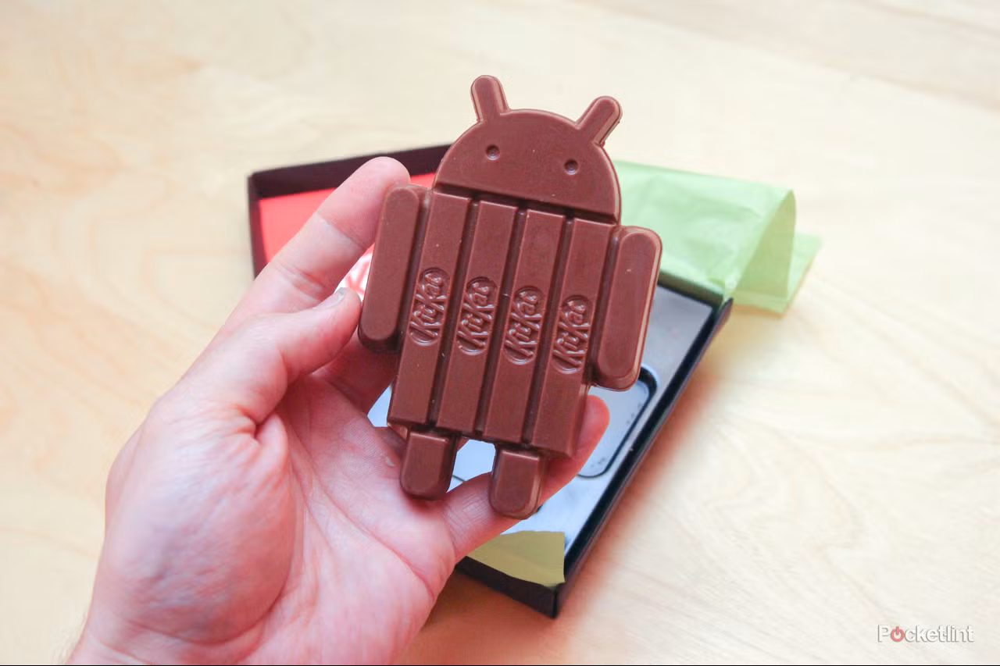
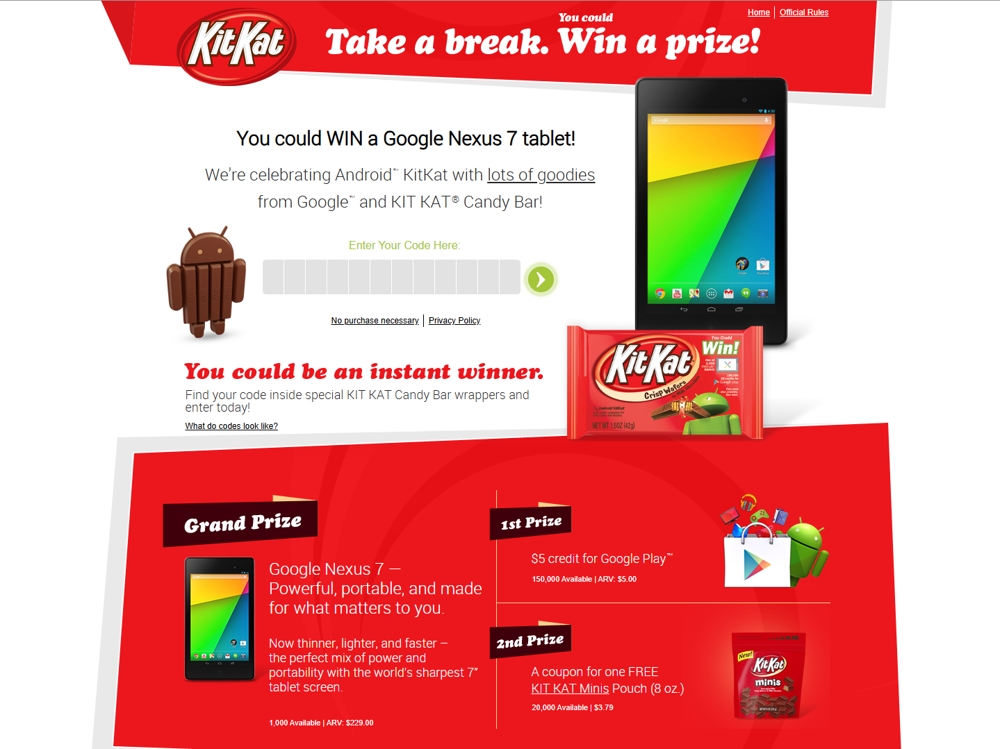
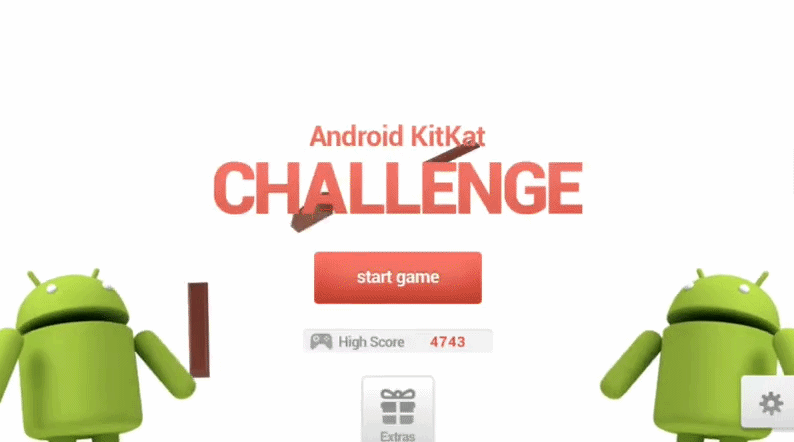
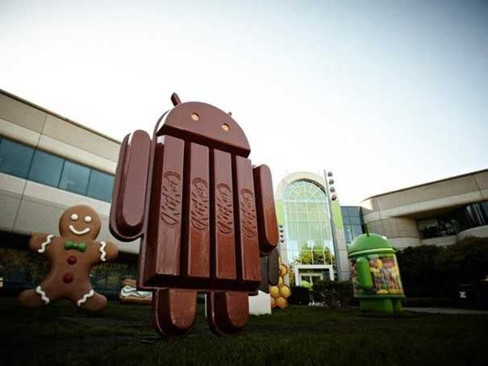
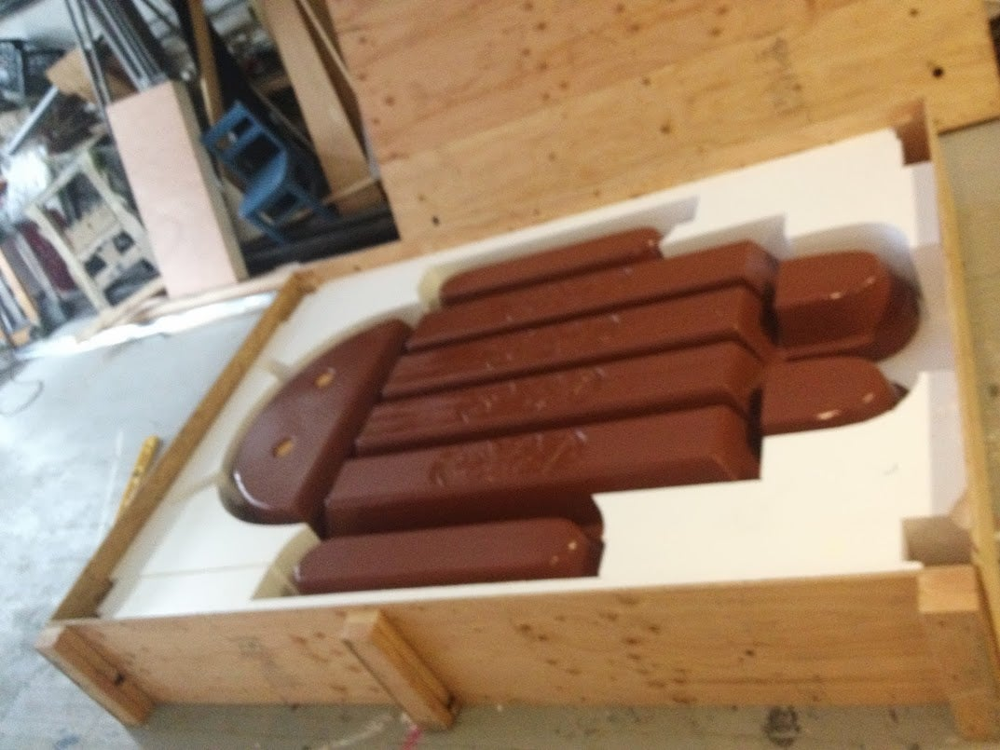

Marketing of Android KitKat
Android 4.4 "KitKat" appears to be the version with the most intriguing and unique marketing. The operating system itself was known to have optmization to adapt for low quality devices.
Did you know it was where the hairy heart mistake debuted? KitKat was also one of two versions to have a trademarked product, the other being Android Oreo.
Actual Bugdroid KitKats
Nestlé produced 500 Bugdroid-shaped bars in their own special packaging before the version launched. Google co-founder Larry Page posted on Google+ about him "opening" the new Android release.

The bar sits in plastic packaging, covered by light green paper sealed with a sticker. The box seems to be premium, with the KitKat logo being on the 'ceiling' of the package.
The seal-sticker is broke to reveal the bar. It only has its wafers in the actual 4 KitKat bars in the body, with the head and limbs being pure chocolate.
KitKat's giveaway
As part of another way to get people to get Android KitKat, a giveaway was held to win prizes from KitKat packages that included the Google Nexus 7 tablet.

The prizes were a Google Nexus 7 tablet, $5 Google Play credit, and KitKat Minis coupon. 
Due to rules following lotteries such as these, a free option is required. A postcard could be also sent to win.
KitKat YouTube series
From October 29 to December 4, 2013, a mini YouTube server was made featuring Bugdroids in comedic KitKat-involving situations.
Episodes were hosted on KitKat's YouTube channel, and possibly produced under KitKat's marketing team.
Mobile Game
Based off of themes in mini web series, Android KitKat Challenge is a fan-made mobile game by doubleleft.

The gameplay is Dumb Way to Die-inspired and features KitKat bars very often throughout the game.
Lawn statue
As with other Android versions, a lawn statue from Google is there.

The statue was placed near its predecessors' statues, such as 2.3 Gingerbread and 4.1 Jellybean.

Comically, the statue was sent in a wooden box with padding that resembles what the candy was packaged in.